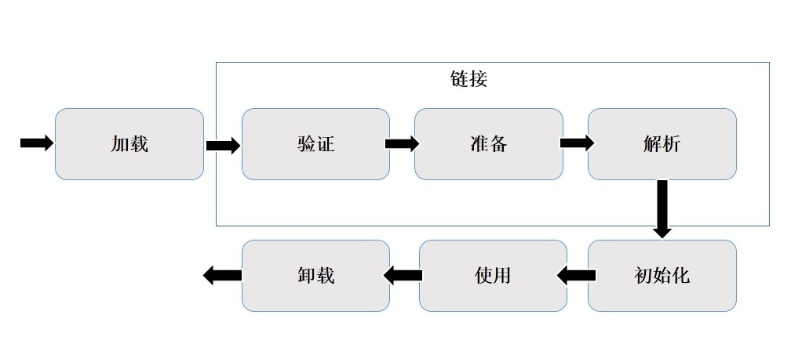

Java基础之ClassLoader
![]()
Java基础之ClassLoader
1.1 简介
开发人员对Java.lang.ClassNotFoundExeption这个异常肯定都不陌生，想要详细了解和解决这个问题，
这涉及到Java技术体系中的类加载技术。
Java的类加载机制是其体系中比较核心的部分，虽然和大部分开发人员直接打交道不多，但是对其背后的有一定的理解有助于排查程序中出现类加载失败等技术问题，对于理解Java虚拟机的连接模型和
Java语言的动态性都有很大的帮助。1.2 常见异常
- Java.lang.ClassNotFoundExeption
- Java.lang.NoClassDefFoundError
- Java.lang.NoSuchMethodError
- Java.lang.ClassCastException
- Java.lang.LinkageError
1.3 class加载过程

装载：通过类的全限定名获取二进制字节流，将二进制流转换成方法去中的运行时数据结构，在内存中生成java.lang.Class对象。
链接：
- 校验：检查导入类或接口的二进制数据的正确性（文件格式验证，元数据验证，字节码验证，符号引用验证）
- 准备：给类的静态变量分配并初始化存储空间
- 解析：将常量池中的符号引用转换成直接引用
初始化：激活类的静态变量,初始化代码块和静态代码块，并初始化程序设置的变量值。
1.3.1 类的主动使用
遇到new,getstatic,putstatic,invokestatic这四条字节码指令
- 创建类的实例
- 访问某个类或接口的静态变量，或者对静态变量赋值
- 调用某个类的静态方法
- 发射( 如Class.forName(“”) )
- 初始化一个类的子类
- Java虚拟机启动时被表明为启动类的类(Java Test)
1.3.2 分析Class.forName()和ClassLoader.loadClass()
Class.forName(className)方法，内部实际调用的方法是Class.forName(className,true,classLoader),第二个参数表示类是否需要初始化，Class.forName(className)默认是需要初始化。这表示会触发目标类的static变量和static代码块会被再次初始化。
ClassLoader.loadClass(className)方法，内部实际调用的是它的重载方法ClassLoader.loadClass(className,false);第二参数表示目标对象是否进行链接，false表示不进行链接，不链接就意味着不进行包括初始化等一系列步骤，所以静态变量和静态代码块就不会的到执行。
1.4 ClassLoader结构简述
JVM中预定义了三种类加载器，当一个JVM实例启动的时候，JVM缺省开始使用如下三种类型的类加载器：
启动（Boostrap）类加载器：引导类装载器是由本地代码实现的类加载器，其负责
/lib下面的核心类库或者可以使用
jvm参数-Xbootclasspath选项指定的jar包加载到内存中。由于引导类加载器涉及到虚拟机本地实现细节，
开发者无法直接获取到启动类加载的引用，所以不允许直接引用进行操作。
扩展（Extension）类加载器：扩展类加载是由Sun的ExtClassLoader（Sun.misc.Launcher$ExtClassLoader）实现的。其负责
将/lib/ext或者由JVM参数-Djava.ext.dir指定位置中的类加载到内存中。开发者可以直接使用标准扩展类记载其。
系统（System）类加载：系统类加载器是由Sun的AppClassLoader（Sun.misc.Launcher$AppClassLoader）是实现的。
其负责将系统类路径java -classpath或-Djava.class.path变量所指的目录下的类库加载到内存中。开发者可以直接使用系统加载器。
- 除了以上列举的三种类加载器，还有一种比较特殊的类型就是线程上下文类加载器
关系图
1.5 ClassLoader加载机制
JVM在加载类的时候默认是采用的是双亲委派机制，通俗的说，就是某个特定的类加载器在接到类加载的请求时，首先将加载的任务委托给父类加载器，依次类推，如果父类加载器可以完成类加载任务，就成功返回，如果父类加载器无法完成此加载任务时，才自己去加载。 对于这种加载机制，可以从系统类加载器和扩展类加载器为例简单分析：
1.扩展类加载器继承关系图
2.系统类加载器继承关系图
1.6 热加载
在 Java 开发领域，热加载一直是一个难以解决的问题，从JDK1.4提供的技术，运行开发人员在debug过程中能够立即重载修改后的class。所有的IDE都支持这个特性（Intellij IDEA，Eclipse，NetBeans)。如果debug应用，并且修改了某些class，jvm会立即载入修改后的class。同样，这个技术也有限制：只允许修改方法体，不允许增加新的class、不允许新增字段、不允许新增方法、不允许修改方法签名。对于整个类的结构修改，仍然需要重启虚拟机，对类重新加载才能完成更新操作。对于某些大型的应用来说，每次的重启都需要花费大量的时间成本。
什么是热加载
|
|
尝试方案：
- 把原来的类信息卸载掉，然后重新加载此类
新建一个类加载器（new），重新加载此类，不管原来的类信息，等待垃圾回收它
问题：
1.改变加载机制?
12默认的虚拟机行为只会在启动时加载类，如果后期有一个类需要更新的话，单纯替换编译的 class 文件，Java 虚拟机是不会更新正在运行的 class。如果要实现热部署，最根本的方式是修改虚拟机的源代码，改变 classloader 的加载行为，使虚拟机能监听 class 文件的更新，重新加载 class 文件，这样的行为破坏性很大，为后续的 JVM 升级埋下了一个大坑。2.是不是所有的类都能进行热加载呢？
12我们程序的入口类都是系统类加载器加载的，也就是AppClassLoader加载的。当你重新使用系统类加载器加载这个类的时候是不会被重新加载的。因为虚拟机会检测这个类是否被加载过，如果已经被加载过，那么就不会重新加载。所以由系统类加载器加载的类，是不能进行热加载的。只有使用我们自定义的类加载器加载的类才能热加载。3.自定义类加载器类有什么问题？
1234目前的加载机制，称为双亲委派，系统在使用一个 classloader 来加载类时，会先询问当前 classloader 的父类是否有能力加载，如果父类无法实现加载操作，才会将任务下放到该 classloader 来加载。这种自上而下的加载方式的好处是，让每个 classloader 执行自己的加载任务，不会重复加载类。但是这种方式却使加载顺序非常难改变，让自定义 classloader 抢先加载需要监听改变的类成为了一个难题。虽然无法抢先加载该类，但是仍然可以用自定义 classloader 创建一个功能相同的类，让每次实例化的对象都指向这个新的类。当这个类的 class 文件发生改变的时候，再次创建一个更新的类，之后如果系统再次发出实例化请求，创建的对象讲指向这个全新的类。同一个类加载器无法同时加载两个相同名称的类，由于不论类的结构如何发生变化，生成的类名不会变，而 classloader 只能在虚拟机停止前销毁已经加载的类，这样 classloader 就无法加载更新后的类了javaagent除了做字节码上面的修改之外，其实还有一些小功能，有时候还是挺有用的
获取所有已经被加载的类：Class[] getAllLoadedClasses();
获取所有已经初始化了的类： Class[] getInitiatedClasses(ClassLoader loader);
获取某个对象的大小： long getObjectSize(Object objectToSize);
将某个jar加入到bootstrap classpath里优先其他jar被加载： void appendToBootstrapClassLoaderSearch(JarFile jarfile);
将某个jar加入到classpath里供appclassloard去加载：void appendToSystemClassLoaderSearch(JarFile jarfile);
设置某些native方法的前缀，主要在找native方法的时候做规则匹配： void setNativeMethodPrefix(ClassFileTransformer transformer, String prefix)。